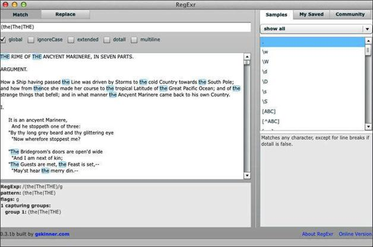

4.1 选择操作
简单地说，选择操作可在多个可选模式中匹配一个。例如，你想在“The Rime of the Ancyent Mariner”中找出the出现过多少次，包括THE、The和the等形式。为此，就可以使用选择操作。
双击图标打开RegExr桌面应用程序。它看起来很像在线版本，但好处是在你的机器本地运行，因此上不了网也没关系。
我已将整首诗复制粘贴到RegExr的桌面版中供之后的练习使用。我是在运行OS X Lion的Mac上使用RegExr桌面版的。
在顶部的文本框中输入：
（the|The|THE）
你会看到下方文本框里诗文中所有的the都被标亮（参见图4-1）。请使用滚动条查看更多的结果。

图4-1 在RegExr桌面版中使用选择操作
可以使用一个选项来使分组更简短。借助选项，可以指定查找模式的方式。例如，选项
(?i)
让你的模式不再区分大小写。因此原来带选择操作的模式可以简写成
(?i)the
在RegExr中试一下，看看效果如何。还可以在RegExr中勾选ignoreCase来设定不区分字母大小写，这两种方式都可以。表4-1中列出了以上选项以及其他各种选项和修饰符。
表4-1 正则表达式中的选项
| 选项 | 描述 | 支持平台 |
|---|---|---|
| (?d) | Unix中的行 | Java |
| (?i) | 不区分大小写 | PCRE、Perl、Java |
| (?J) | 允许重复的名字 | PCRE* |
| (?m) | 多行 | PCRE、Perl、Java |
| (?s) | 单行（dotall） | PCRE、Perl、Java |
| (?u) | Unicode | Java |
| (?U) | 默认最短匹配 | PCRE |
| (?x) | 忽略空格和注释 | PCRE、Perl、Java |
| (?-…) | 复原或关闭选项 | PCRE |
*参见http://www.pcre.org/pcre.txt中的“Named Subpatterns”（命名子模式）
接下来我们在grep中使用选择操作。表4-1中的选项并不适用于grep，所以你要使用原来的选择模式。要对单词the出现一次或多次的行的数目进行统计，且不区分大小写，则用：
grep –Ec “(the|The|THE)” rime.txt
可以得到这个结果：
327
这个结果还不能说明一切。欲知原因，请继续阅读。
以下是对上面的grep命令的分析。
下面的方法会将单词的每一次出现都作为一行内容返回，这样就可以得到实际的出现次数：
grep –Eo “(the|The|THE)” rime.txt | wc –l
这个命令返回的是：
412
以下是对命令的分析。
为什么有327与412这样大的差异呢？因为-c给出的是匹配的行的数目，但是一行中可能有多个单词匹配。若使用-o和wc –l，则指定单词不管以哪一种形式出现，每次出现都会作为单独的一行统计，这样结果值就会更大。
要使用Perl执行同种匹配，则这样写：
perl -ne 'print if (the|The|THE)' rime.txt
或者更好的方式是不用选择操作，而使用前面提到的(?i)选项：
perl -ne 'print if (?i)the' rime.txt
再进一步改善，就是将i修饰符加在定界符之后：
perl -ne 'print if thei' rime.txt
结果相同，但命令是越简单越好。表4-2中列出了更多的修饰符（也称为标记符）。请与表4-1中的选项（两者相似但语法不同）进行比较。
表4-2 Perl语言中的修饰符（标记符）*
| 修饰符 | 描述 |
|---|---|
| a | 匹配\d、\s、\w以及处于ASCII范围内的POSIX字符 |
| c | 匹配失败后则停留在当前位置 |
| d | 使用默认的本地平台的规则 |
| g | 全局匹配 |
| i | 匹配时不区分大小写 |
| l | 使用当前位置的规则 |
| m | 多行字符串 |
| p | 保留匹配的字符串 |
| s | 将字符串看做一行内容 |
| u | 匹配时使用Unicode规则 |
| x | 忽略空格及注释 |